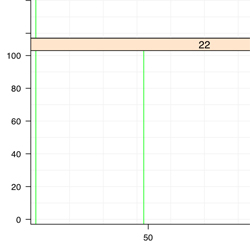

Administration Range
Variation
Administration Time, Single Dose

Use
- To plot the range of administration times for a single dose
Arguments
- data.for.admin.time
- - List that contains a matrix of administration times and IDs
- ids
- - Equals 'groups'
- - Supplied from the 'groups' in xyplot()
- rows.being.used
- - Equals 'subscripts'
- - Supplied from xyplot()
- black.and.white
- - Logical, Describes whether the line should be for grey scale or color output
Notes
- Please click on the picture/code above to see how the "data.for.admin.time" is collected
- Remove the '#' before the cats to see what the function is doing
Code
'plot.administration.time' <-
function(
data.for.admin.time = data.to.plot.in.panel,
ids = groups,
rows.being.used = subscripts,
black.and.white = black.and.white.in.panel
){
unique.ids <- unique(ids[rows.being.used])
admin.time.data <- data.for.amt[["admin.time"]]
#cat("\n\nAdmin. Time Data\n");print(amt.data)
admin.time.data.select <- c(admin.time.data[admin.time.data[,"ID"] %in% unique.ids,"TIME"] )
#To select the administration times where the IDs are being plotted
#cat("\n\nSelected Admin. Time Data\n");print(amt.data.select)
if(black.and.white){
polygon.color = "grey50" #medium grey
amt.color = "grey5" #almost black
}else{
polygon.color = "green"
amt.color = "green"
}
if(length(admin.time.data.select) > 0){
cat("\nPlotting Administration time\n")
admin.time.range <- range(admin.time.data.select)
if(amt.range[1] == amt.range[2]){
panel.abline(v = amt.range[1],col = amt.color)
}else{
polygon.points <- rbind(
c(admin.time.range[1],y.min.lim),
c(admin.time.range[2],y.min.lim),
c(admin.time.range[2],y.max.lim),
c(admin.time.range[1],y.max.lim)
)
panel.polygon(polygon.points,col = polygon.color,border = polygon.color)
}
}else{
cat("\n There is no Administration Times being used. Administration lines will not appear. \n")
}
}
Administration Range, Multiple Doses
Use
- To plot the individual administration times for a multiple doses
Arguments
- data.for.admin.time
- - List that contains a matrix of administration times and IDs
- ids
- - Equals 'groups'
- - Supplied from the 'groups' in xyplot()
- rows.being.used
- - Equals 'subscripts'
- - Supplied from xyplot()
- black.and.white
- - Logical, Describes whether the line should be for grey scale or color output
Notes
- Please click on the picture/code above to see how the "data.for.admin.time" is collected
- Remove the '#' before the cats to see what the function is doing
Code
plot.administration.time.multi <-
function(
data.for.amt = data.to.plot.in.panel,
ids = groups,
rows.being.used = subscripts,
black.and.white = black.and.white.in.panel
){
unique.ids <- unique(ids[rows.being.used])
amt.data <- data.for.amt[["amt"]]
#cat("\n\nAMT Data\n");print(amt.data)
amt.data.select <- c(amt.data[amt.data[,"ID"] %in% unique.ids,"TIME"] )
#To select the administration times where the IDs are being plotted
cat("\n\nSelected AMT Data\n");print(amt.data.select)
if(black.and.white){
polygon.color = "grey50" #medium grey
amt.color = "grey5" #almost black
}else{
polygon.color = "green"
amt.color = "green"
}
if(length(amt.data.select) > 0){
cat("\nPlotting Administration time\n")
panel.abline(v = unique(amt.data.select),col = amt.color)
#Plot the unique times
}else{
cat("\n There is no AMT times being used. AMT lines will not appear. \n")
}
}
Legend Info
key = list(
title = "Administration Range",
text = list(
c("Points"),
col="black"
),
points = list(
col = c(if(bw){c("grey25")}else{c("green")}),
pch = c(15),
cex = c(2)*0.75
),
lines = list(
col = c(if(bw){c("grey25")}else{c("green")}),
lwd = c(1)*0.75,
lty = c("solid")
),
type = "l",
space = "right",
cex.title = 1,
cex = 0.75
)